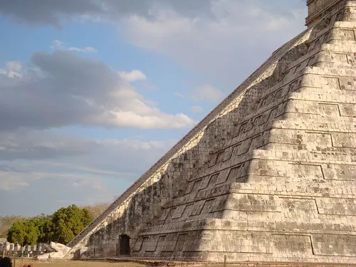

Chichén Itzá, Mexico
Constructed: c. 600–1200 CE
The Maya built Chichén Itzá's main pyramid, El Castillo, as a giant calendar in stone. It has 365 steps, one for each day of the year, and during the spring and fall equinoxes, sunlight creates a shadow that looks like a serpent slithering down the staircase, an effect so precise it couldn't have been an accident. The site also contains one of the largest ball courts in ancient Mesoamerica, where a ritual game with life-or-death stakes was played, and a sound at one end echoes with an eerie, chirping clarity at the other, still puzzling acoustic engineers today.
Type: Romanesque Revival Architecture